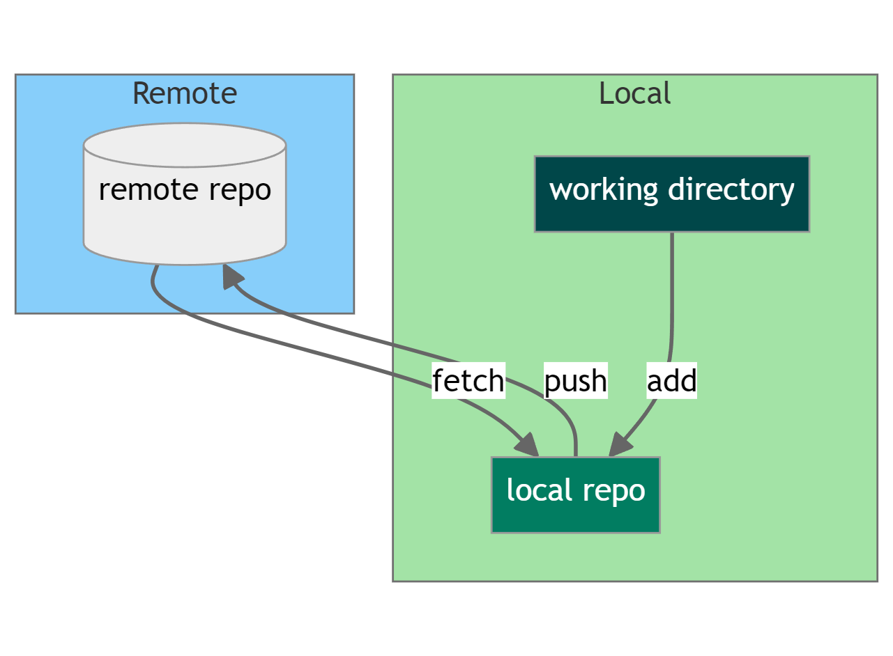
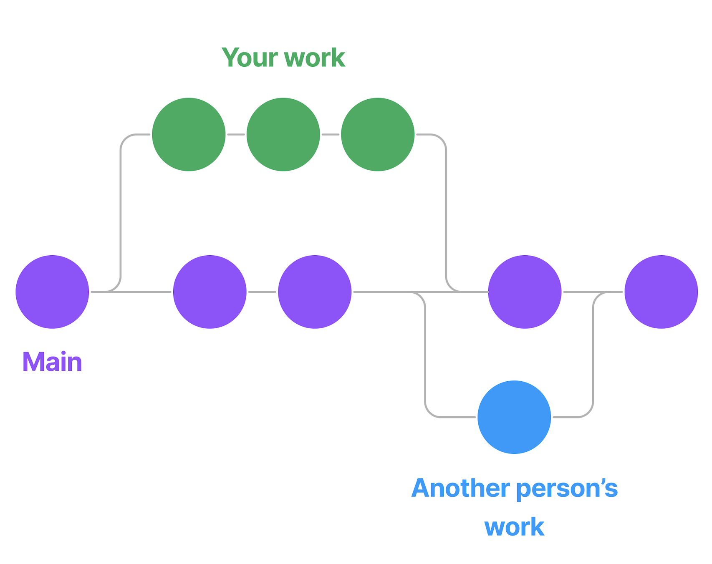

Git and GitHub: A Beginner’s Guide
Introducing Git and GitHub: Your New Best Friend
Git:
- Version Control: Tracks and manages changes to files
- Local Repository: A local storage of your files’s history (no more text_version1.doc, text_version2.doc, text_versionfinal.doc, text_versionfinalfinal.doc)
- Commits: Snapshots of changes which you want to keep
GitHub:
- Remote Hosting: Online platform for storing and sharing Git repositories.
- Pull Requests: Propose changes to projects.
- Branches: Different versions of a project.
Git Workflow

Git Workflow: Local
Local Environment:
- Working Directory: This is where your files live before they are staged.
- Once files are committed, they reside in the local repository.
- You HAVE to write commit messages for every commit.
Operations:
add: Moves changes from the working directory to the staging area.commit: Moves changes from the staging area to the local repo.merge: Merges changes from different branches.
Git Workflow: Remote
This cloud (GitHub) stores the commits after they have been pushed.
Operations:
push- Sends commits from the local repo to the remote repo.fetch- Brings changes from the remote repo to your local repo (without merging them).
The workflow typically goes from making changes in the working directory, committing them to the local repo, and finally pushing them to the remote repo.
Collaborating on GitHub

README.md and structure
- A README.md file is a text file that introduces and explains a project.
- It is the first thing people see when they visit your repository.
- It should contain a description of the project, brief explanaition of the analysis, and an overview of the data directory
- It should also contain a your contact information (Mail)
- Merles Thesis is a good example of how to to documentation.
Example directory:
├── README.md
├── data
│ ├── raw
│ └── processed
├── docs
├── scripts
└── srcConclusion: Welcome to the Git World!
- You’ve learned the basics of Git, your new best friend.
- Init, Clone, Commit, Push, and Pull are your superpowers in the world of coding.
- Keep practicing, and you’ll be a Git superhero in no time!